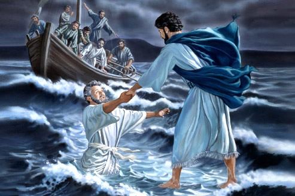

Leitura Orante
Leitura do dia
19º Domingo do tempo comum
(Verde, glória, creio - 3ª semana do saltério)
9 de agosto de 2020
Leitura Orante do Evangelho
Ouça o áudio da oração e reflexão do padre Francisco das Chagas


Oração do dia
Deus eterno e todo-poderoso, a quem ousamos chamar de Pai, dai-nos cada vez mais um coração de filhos, para
alcançarmos um dia a herança que prometestes. Por Nosso Senhor Jesus Cristo, Vosso Filho, na unidade do
Espírito Santo.
Leitura: 1 Reis 19,9.11-13
Naqueles dias, ao chegar a Horeb, o monte de Deus, 9o profeta Elias entrou numa gruta, onde passou a noite. E eis que a palavra do Senhor lhe foi dirigida nestes termos: 11“Sai e permanece sobre o monte diante do Senhor, porque o Senhor vai passar”. Antes do Senhor, porém, veio um vento impetuoso e forte, que desfazia as montanhas e quebrava os rochedos. Mas o Senhor não estava no vento. Depois do vento houve um terremoto. Mas o Senhor não estava no terremoto. 12Passado o terremoto, veio um fogo. Mas o Senhor não estava no fogo. E, depois do fogo, ouviu-se o murmúrio de uma leve brisa. 13Ouvindo isso, Elias cobriu o rosto com o manto, saiu e pôs-se à entrada da gruta. – Palavra do Senhor.
Salmo Responsorial: 84(85)
Mostrai-nos, ó Senhor, vossa bondade e a vossa salvação nos concedei!
!
Quero ouvir o que o Senhor irá falar: é a paz que ele vai anunciar. Está perto a salvação dos que o temem, e a glória habitará em nossa terra.
Mostrai-nos, ó Senhor, vossa bondade e a vossa salvação nos concedei! !
A verdade e o amor se encontrarão, a justiça e a paz se abraçarão; da terra brotará a fidelidade, e a justiça olhará dos altos céus.
Mostrai-nos, ó Senhor, vossa bondade e a vossa salvação nos concedei! !
O Senhor nos dará tudo o que é bom, e a nossa terra nos dará suas colheitas; a justiça andará na sua frente e a salvação há de seguir os passos seus.
Mostrai-nos, ó Senhor, vossa bondade e a vossa salvação nos concedei! !Leitura: Romanos 9,1-5
Irmãos, 1não estou mentindo, mas, em Cristo, digo a verdade, apoiado no testemunho do Espírito Santo e da minha consciência. 2Tenho no coração uma grande tristeza e uma dor contínua, 3a ponto de desejar ser eu mesmo segregado por Cristo em favor de meus irmãos, os de minha raça. 4Eles são israelitas. A eles pertencem a filiação adotiva, a glória, as alianças, as leis, o culto, as promessas 5e também os patriarcas. Deles é que descende, quanto à sua humanidade, Cristo, o qual está acima de todos, Deus bendito para sempre! Amém! – Palavra do Senhor.
Evangelho: Mateus 14,22-33
Depois da multiplicação dos pães, 22Jesus mandou que os discípulos entrassem na barca e seguissem, à sua frente, para o outro lado do mar, enquanto ele despediria as multidões. 23Depois de despedi-las, Jesus subiu ao monte, para orar a sós. A noite chegou, e Jesus continuava ali sozinho. 24A barca, porém, já longe da terra, era agitada pelas ondas, pois o vento era contrário. 25Pelas três horas da manhã, Jesus veio até os discípulos, andando sobre o mar. 26Quando os discípulos o avistaram andando sobre o mar, ficaram apavorados e disseram: “É um fantasma”. E gritaram de medo. 27Jesus, porém, logo lhes disse: “Coragem! Sou eu. Não tenhais medo!” 28Então Pedro lhe disse: “Senhor, se és tu, manda-me ir ao teu encontro, caminhando sobre a água”. 29E Jesus respondeu: “Vem!” Pedro desceu da barca e começou a andar sobre a água, em direção a Jesus. 30Mas, quando sentiu o vento, ficou com medo e, começando a afundar, gritou: “Senhor, salva-me!” 31Jesus logo estendeu a mão, segurou Pedro e lhe disse: “Homem fraco na fé, por que duvidaste?” 32Assim que subiram no barco, o vento se acalmou. 33Os que estavam no barco prostraram-se diante dele, dizendo: “Verdadeiramente, tu és o Filho de Deus!” – Palavra da salvação.
Leituras do mês
TAGS
missao Amazonia evengel covid-19 indigenas novica papa francisco
Destaques
Província Stella Matutina
Rua São Benedito, 2146 - Santo Amaro - São Paulo - SP |
Tel. (11)
5547-7222


Província Spiritus Divinae Sapientiae
Rua Arnaldo Janssen, 320 - Cara-Cara - Ponta Grossa - PR |
Tel. (42) 3326 4091